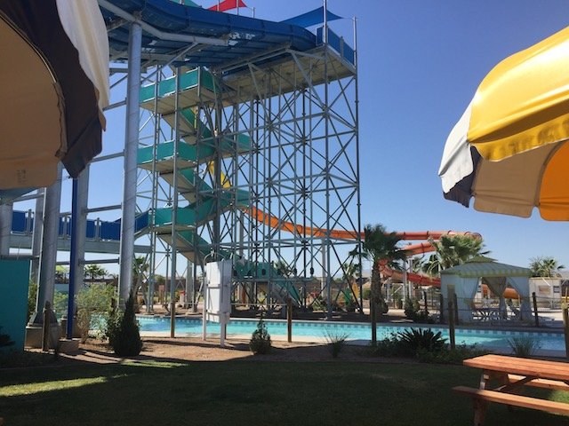

| |
Zuma Zooma Review

We're on Zuma Zooma. This is another one of those Trap Door slides. Unfortunatly, it's a Helix Trap Door slide, and those aren't nearly as fun as the straight ones. But to be fair, this is the best helix trap-door slide. We get in, countdown, floor drops. We go down a fairly large drop. Honestly, at this point, it feels like just a standard straight Trap Door slide. But nope. We then head into a helix. And this thing has A LOT of speed going into it. So there's quite a bit of laterals going down into this thing. And then SPLASH!!! We land into the runway. So I definetly recommend giving it a try if you've never done a Trap Door, or they're your thing.
7/10
Location: Cowabunga Bay Las Vegas
Opened: 2014
Built by: Polin Waterslides
Last Ridden: June 5, 2017
Zuma Zooma Photos
Home
|